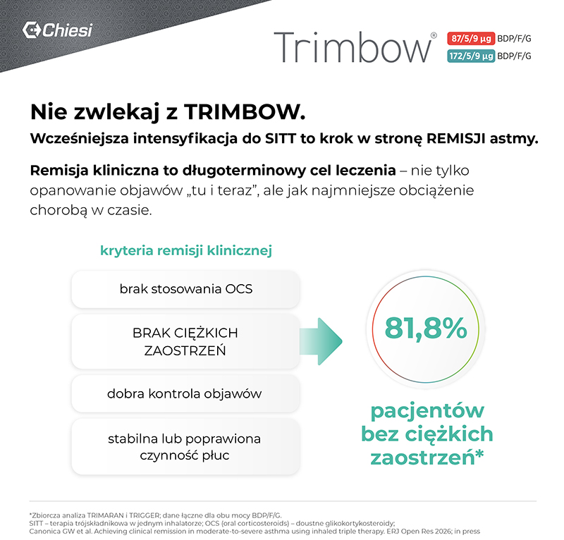
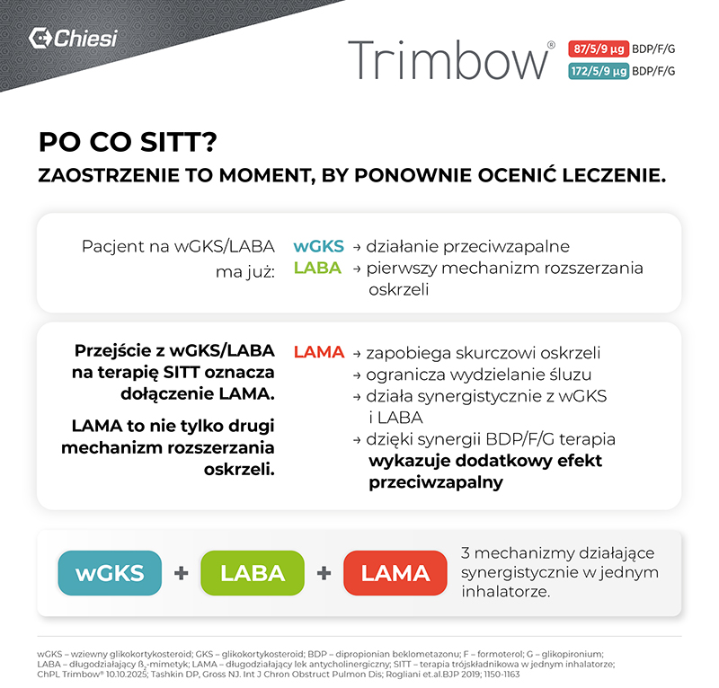
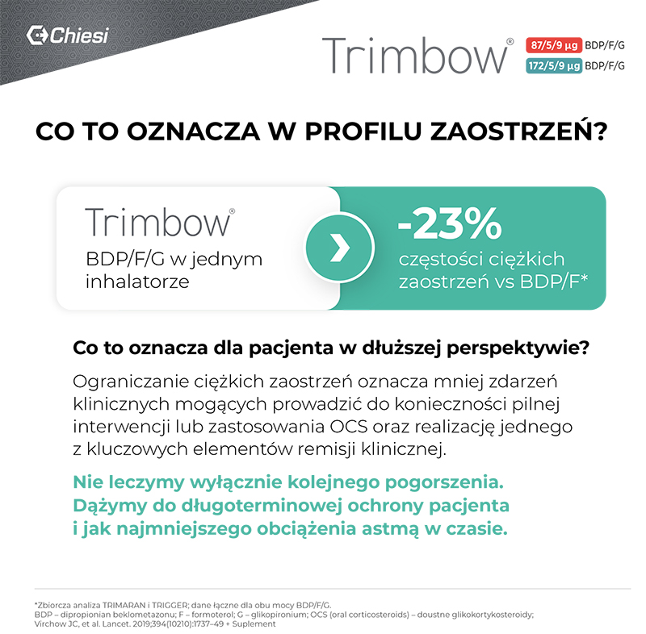
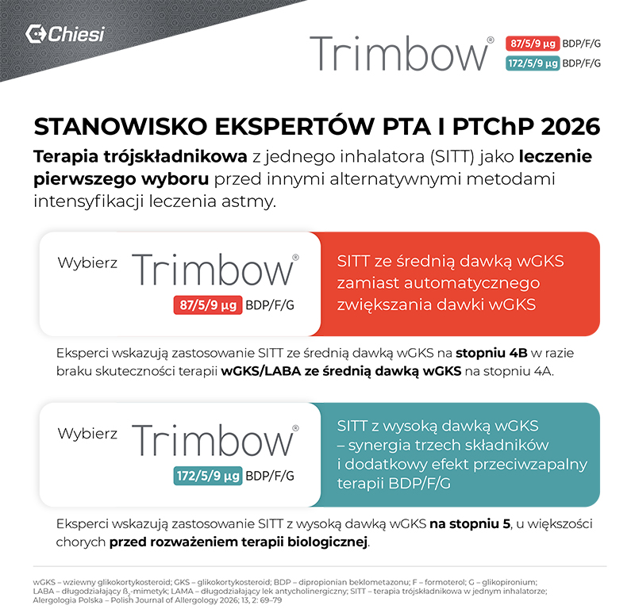
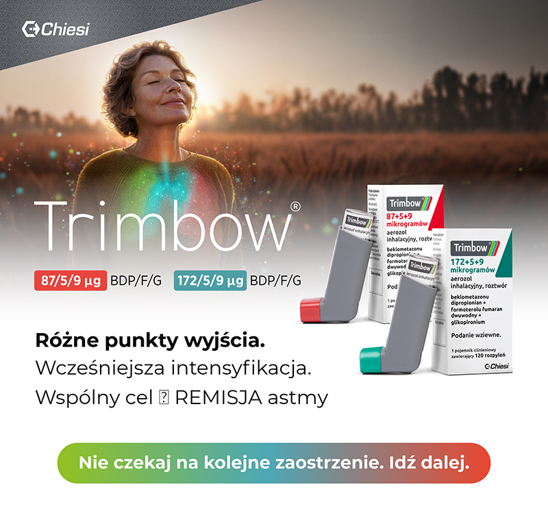

SKRÓCONA INFORMACJA O LEKU: Nazwa produktu leczniczego: Trimbow (87 µg + 5 µg + 9 µg)/dawkę inhalacyjną, Trimbow (172 µg + 5 µg + 9 µg)/dawkę inhalacyjną, aerozol inhalacyjny, roztwór. Nazwa powszechnie stosowana: Beclometasoni dipropionas + Formoteroli fumaras + Glycopyrronii bromidum. Skład jakościowy i ilościowy: Każda dostarczona dawka (rozpylenie opuszczające ustnik) zawiera: Trimbow (87 µg + 5 µg + 9 µg): 87 µg beklometazonu dipropionianu, 5 µg formoterolu fumaranu dwuwodnego i 9 µg glikopironium (w postaci 11 µg glikopironiowego bromku). Każda odmierzona dawka (rozpylenie opuszczające zawór) zawiera 100 µg beklometazonu dipropionianu, 6 µg formoterolu fumaranu dwuwodnego i 10 µg glikopironium (w postaci 12,5 µg glikopironiowego bromku). Trimbow (172 µg + 5 µg + 9 µg): 172 µg beklometazonu dipropionianu, 5 µg formoterolu fumaranu dwuwodnego i 9 µg glikopironium (w postaci 11 µg glikopironiowego bromku). Każda odmierzona dawka (rozpylenie opuszczające zawór) zawiera 200 µg beklometazonu dipropionianu, 6 µg formoterolu fumaranu dwuwodnego i 10 µg glikopironium (w postaci 12,5 µg glikopironiowego bromku). Substancja pomocnicza o znanym działaniu: Trimbow (87 µg + 5 µg + 9 µg), Trimbow (172 µg + 5 µg + 9 µg): zawiera 8,856 mg etanolu na rozpylenie. Działanie: Trimbow (87 µg + 5 µg + 9 µg), Trimbow (172 µg + 5 µg + 9 µg) zawiera beklometazonu dipropionian, formoterol i glikopironium w postaci roztworu tworzącego aerozol o bardzo drobnych cząstkach o średnicy aerodynamicznej cząstki odpowiadającej medianie rozkładu masowego wynoszącej około 1,1 µm, ze zdolnością do jednoczesnej depozycji wszystkich trzech składników. Beklometazonu dipropionian podawany wziewnie w zalecanych dawkach wykazuje glikokortykosteroidowe działanie przeciwzapalne w obrębie płuc. Formoterol jest selektywnym agonistą receptorów beta-2-adrenergicznych, powodującym rozkurcz mięśni gładkich oskrzeli u pacjentów z odwracalną obturacją dróg oddechowych. Glikopironium jest długo działającym antagonistą receptora muskarynowego, podawanym wziewnie w leczeniu w celu rozszerzenia oskrzeli. Wskazania do stosowania: Trimbow (87 µg + 5 µg + 9 µg): Przewlekła obturacyjna choroba płuc (POChP): leczenie podtrzymujące u dorosłych pacjentów z umiarkowaną lub ciężką POChP, u których nie uzyskuje się odpowiedniego efektu leczenia podczas jednoczesnego stosowania kortykosteroidu wziewnego i długo działającego agonisty receptorów beta-2 lub jednoczesnego stosowania długo działającego agonisty receptorów beta-2 i długo działającego antagonisty receptorów muskarynowych. Astma: leczenie podtrzymujące astmy u dorosłych pacjentów z niewystarczającą kontrolą objawów choroby po zastosowaniu produktu złożonego z długo działającego agonisty receptorów beta-2 i średnich dawek kortykosteroidu wziewnego, u których wystąpiło jedno lub więcej zaostrzeń astmy w ciągu poprzedniego roku. Trimbow (172 µg + 5 µg + 9 µg): Astma: leczenie podtrzymujące astmy u dorosłych pacjentów z niewystarczającą kontrolą objawów astmy po zastosowaniu produktu złożonego z długo działającego agonisty receptorów beta-2 i dużych dawek kortykosteroidu wziewnego, u których wystąpiło jedno lub więcej zaostrzeń astmy w ciągu poprzedniego roku. Dawkowanie i sposób podawania: Trimbow (87 µg + 5 µg + 9 µg), Trimbow (172 µg + 5 µg + 9 µg): zalecana dawka to dwie inhalacje podawane dwa razy na dobę. Maksymalna dawka to dwie inhalacje podawane dwa razy na dobę. Pacjentom należy zalecić, aby przyjmowali produkt leczniczy Trimbow codziennie, nawet w przypadku braku objawów. Jeśli w okresie między dawkami wystąpią objawy, należy zastosować leczenie wziewnym, krótko działającym agonistą receptorów beta-2 w celu natychmiastowego złagodzenia objawów. Astma – wybierając moc dawki początkowej produktu leczniczego Trimbow (87/5/9 mikrogramów lub 172/5/9 mikrogramów), należy wziąć pod uwagę nasilenie choroby u pacjenta, uprzednio stosowane leczenie astmy, w tym dawkę kortykosteroidów wziewnych, jak również aktualną kontrolę objawów astmy oraz ryzyko zaostrzenia w przyszłości. Przeciwwskazania: nadwrażliwość na substancje czynne lub na którąkolwiek substancję pomocniczą. Specjalne ostrzeżenia i środki ostrożności dotyczące stosowania: Trimbow (87 µg + 5 µg + 9 µg), Trimbow (172 µg + 5 µg + 9 µg): nie stosować w stanach ostrych. Ten produkt leczniczy nie jest wskazany w leczeniu ostrych epizodów skurczu oskrzeli lub ostrego zaostrzenia. Należy zachować ostrożność u pacjentów z zaburzeniami rytmu serca, jaskrą z wąskim kątem przesączania, zatrzymaniem moczu, ciężką chorobą serca oraz u pacjentów z wydłużeniem odstępu QTc. Wpływ na płodność, ciążę i laktację: brak danych lub ograniczone dane dotyczące stosowania produktu leczniczego Trimbow u kobiet w okresie ciąży i karmienia piersią. Produkt leczniczy Trimbow należy stosować w okresie ciąży tylko wtedy, gdy spodziewane korzyści dla pacjentki przewyższają możliwe ryzyko dla płodu. Działania niepożądane: często: zapalenie płuc (u pacjentów z POChP), zapalenie gardła, kandydoza jamy ustnej, zakażenie dróg moczowych, ból głowy, dysfonia. Niezbyt często: grypa, zakażenie grzybicze jamy ustnej, kandydoza przełyku, hipokaliemia, hiperglikemia, niepokój, drżenie, zawroty głowy, migotanie przedsionków, wydłużenie odstępu QT, tachyarytmia, kaszel, nudności, biegunka, suchość błony śluzowej jamy ustnej, wysypka, pokrzywka, świąd. Specjalne środki ostrożności podczas przechowywania: Trimbow (87 µg + 5 µg + 9 µg): nie zamrażać, nie wystawiać na działanie temperatury wyższej niż 50°C, nie przekłuwać pojemnika ciśnieniowego, przechowywać w lodówce (2°C–8°C) przed wydaniem. Trimbow (172 µg + 5 µg + 9 µg): nie zamrażać, nie wystawiać na temperaturę wyższą niż 50°C, nie przekłuwać pojemnika ciśnieniowego, przechowywać w lodówce (2°C–8°C) przed wydaniem. Po wydaniu produkt leczniczy można przechowywać maksymalnie 4 miesiące w temperaturze do 25°C (dla 87/5/9) lub 3 miesiące w temperaturze do 25°C (dla 172/5/9). Uwaga: przed zastosowaniem leku należy zapoznać się z Charakterystyką Produktu Leczniczego dostępną w Chiesi Poland Sp. z o.o., Al. Jerozolimskie 134, 02-305 Warszawa, tel.: (22) 620 14 21, faks: +48 22 652 37 79, e-mail: info-pl@chiesi.com oraz na stronie internetowej www.chiesi.pl. Data ostatniej aktualizacji tekstu ChPL: Trimbow (87 µg + 5 µg + 9 µg): 10.10.2025 r.; Trimbow (172 µg + 5 µg + 9 µg): 10.10.2025 r. Podmiot odpowiedzialny: Chiesi Farmaceutici S.p.A. Via Palermo 26/A 43122 Parma Włochy. Numery pozwoleń na dopuszczenie do obrotu: Trimbow (87 µg + 5 µg + 9 µg): EU/1/17/1208/002, EU/1/17/1208/003, EU/1/17/1208/004, EU/1/17/1208/005; Trimbow (172 µg + 5 µg + 9 µg): EU/1/17/1208/007, EU/1/17/1208/008, EU/1/17/1208/009. Kategoria dostępności: produkt leczniczy wydawany z przepisu lekarza. Cena: Trimbow (87 µg + 5 µg + 9 µg), wielkość opakowania: 1 pojemnik/180 rozpyleń, urzędowa cena detaliczna: 308,00 zł; maksymalna dopłata świadczeniobiorcy: 92,40 zł. Trimbow (172 µg + 5 µg + 9 µg): wielkość opakowania: 1 pojemnik/120 rozpyleń, urzędowa cena detaliczna: 247,27 zł; maksymalna dopłata świadczeniobiorcy: 103,54 zł.
1. Aktualne obwieszczenie Ministra Zdrowia w sprawie wykazu refundowanych leków, środków spożywczych specjalnego przeznaczenia żywieniowego oraz wyrobów medycznych znajduje się na stronie internetowej: www.gov.pl/web/zdrowie.